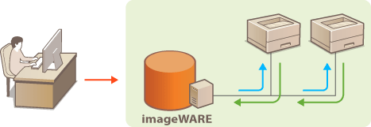

Configuring SLP Communication with imageWARE
You can use device management software such as imageWARE Enterprise Management Console* to facilitate the collection and management of various information about networked devices. In an environment where such software is installed, information about device settings and errors is collected via a server on the network. If the machine is connected to an imageWARE network, imageWARE searches the network for the machine by using protocols such as Service Location Protocol (SLP). SLP settings can be specified via the Remote UI.
* For more information about imageWARE, contact your local authorized Canon dealer.

|
|
|
To change the SLP port number Changing Port Numbers
|
1
Start the Remote UI and log on in System Manager Mode. Starting the Remote UI
2
Click [Settings/Registration].

3
Click [Network Settings]  [TCP/IP Settings].
[TCP/IP Settings].

4
Click [Edit] in [Multicast Discovery Settings].

5
Select the [Respond to Discovery] check box and enter the required information.

[Respond to Discovery]
Select the check box to set the machine to respond to imageWARE multicast discovery packets and enable management by imageWARE. If you do not want to respond, clear the check box.
Select the check box to set the machine to respond to imageWARE multicast discovery packets and enable management by imageWARE. If you do not want to respond, clear the check box.
[Scope Name]
To include the machine in a specific scope, enter up to 32 alphanumeric characters for the scope name.
To include the machine in a specific scope, enter up to 32 alphanumeric characters for the scope name.
6
Click [OK].
7
Restart the machine.
Turn OFF the machine, wait for at least 10 seconds, and turn it back ON.